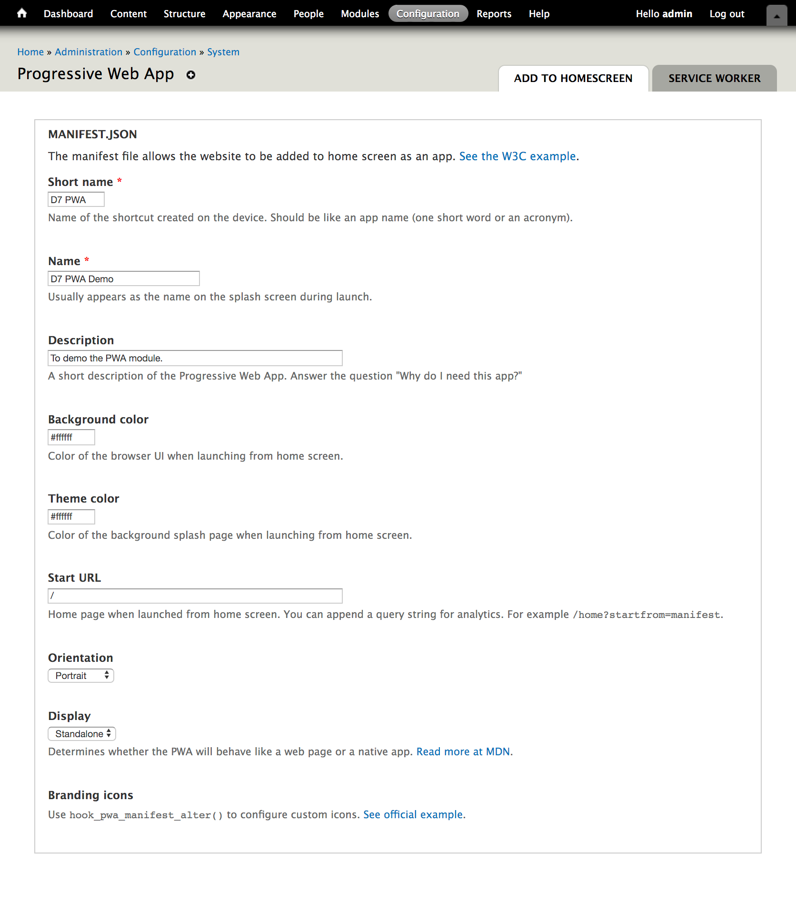
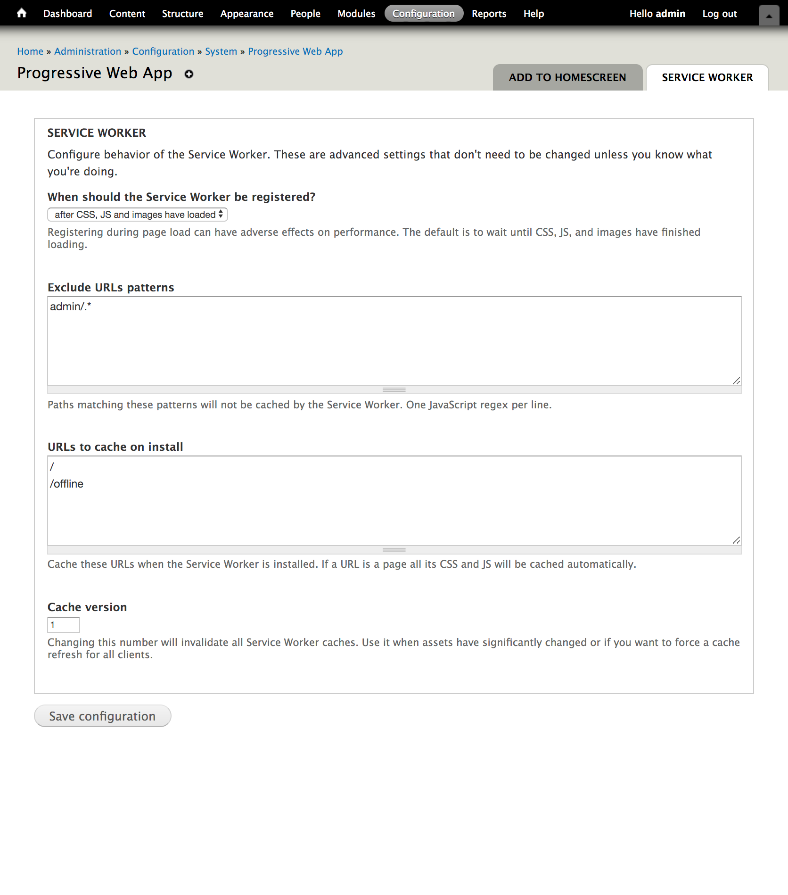

Progressive
Web Apps
for all Drupal sites
What's a PWA?
Progressive Web App origin story
- Responsive website
- Network resilient
- Native-feeling
- Instant install
- Discoverable
- Safely delivered
- ...and more
Main ingredients
- Service Worker
- Controls network interaction, manages offline functionality, and increases engagement with website. Brings native app features to the web.
- manifest.json
- Makes your website installable and discoverable.
Service Worker
A separate JavaScript thread which has listeners
for network requests and app lifecycle events.
🔐 HTTPS is a hard dependency!
manifest.json
Provides branding when site is added to homescreen
Defines splash screen of a PWA
Allows PWAs to appear in app stores
SW + manifest

PWA in Drupal
Good news! Drupal has 100% compatibility.
PWAs work with all Drupal sites,
no decoupling or app shell needed.
There's a module for that™
PWA Drupal module provides drop-in support
to turn your D7 website into a simple PWA.
D8 is coming sometime... Help us out!
PWA Module can...
- Precache your preferred URLs
- Provide offline support after first visit
- Provide manifest.json for installable app
- Configure (almost) everything via admin UI
- Uninstall SW when module is disabled
Self uninstall
The SW doesn't overstay its welcome when
you disable the module. No zombie workers!
Avoids big problems on a plugin-based
CMS like Drupal or WordPress.
PWA module cannot...
- Handle push notifications
- Handle background sync
- Choose cache strategy
Instead of opinionated implementations, these bits are probably best supplied with a Drupal API.
Admin UX
- Install module & edit settings
- Module makes requests to your whitelist
and generates a SW with pre-cache.
Manifest config
SW config
Quick demo

What about D8?
"You said all Drupal sites"
I'm a frontend dev with D7 experience.
I need YOUR help with D8!
Future Drupal plans
We're starting with opinionated features and will use our experiences to make flexible APIs.
Service Worker API
We're planning a Service Worker API and
hashing out ideas for a centralized Drupal API.
Plan: leverage JS community tools
to generate a customized Service Worker.
Ideal Outcome
Allow unrelated modules/themes to request specific features of PWA functionality using hooks.
Possibilities with SW API
- Push notification module
- Background sync module
- PWA 2.0 reduced to manifest.json config
- Views config that caches specific Ajax paths offline
- Themes that provide an "app shell" and dynamically load new URLs as a faux-SPA
Finished
Say hi: